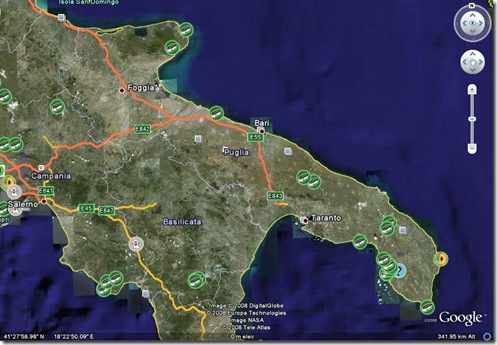
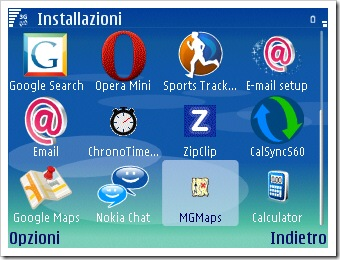
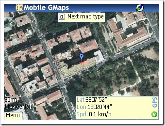
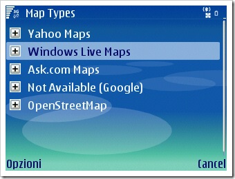
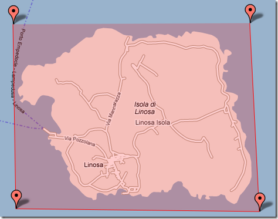
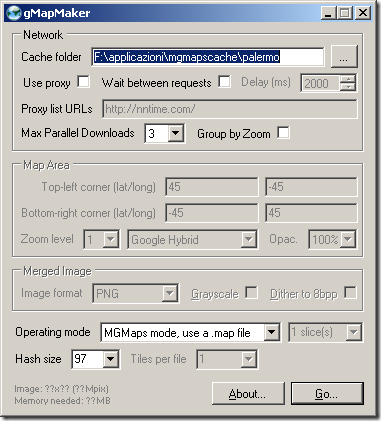
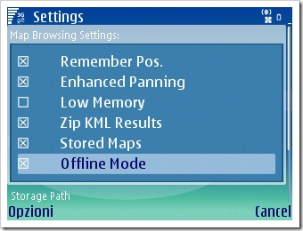
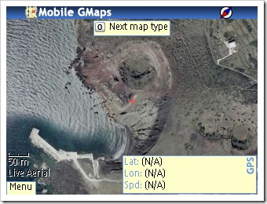

12 settembre, 2008 | di Pietro Blu Giandonato
 Non so per quale motivo non abbia scritto finora un post su una delle cose che mi piacciono TANTO: il geocaching.
Non so per quale motivo non abbia scritto finora un post su una delle cose che mi piacciono TANTO: il geocaching.
Forse perché ho pensato banalmente che tutti coloro che lavorano con GIS e cartografia digitale possiedano un dispositivo GPS, e per la regola della transizione che costoro conoscano anche il geocaching.
Nata nel 2000, all’indomani della fatidica caduta della “selective availability”, si tratta di una sorta di grande caccia al tesoro mondiale, alla quale possono partecipare i possessori di un GPS e di una gran voglia di cercare scatolette nascoste da loro simili.
Unico indizio, ovviamente, una coppia di coordinate rigorosamente espresse in WGS84. Lo scopo è dunque quello di recarsi nel luogo indicato e cercare il tesoro (cache), consistente in una scatola con dimensioni che possono andare dal contenitore per rullini a quelle di un secchio (sic!).
 Cosa c’è dentro? Ci trovate sempre almeno un log book, sul quale registrare il proprio nome e la data del ritrovamento, perchè come avrete intuito, i cache non vanno mai portati via. Come optional potreste trovare oggetti collocati dal proprietario o dai “geocacher” che l’hanno trovato. Tra questi i più curiosi sono i “trackables“, oggetti tra i più vari che hanno un codice univoco e dunque tracciabili nel loro viaggio incessante da un geocache all’altro. Ogni cacher che trova un trackable ha l’onere e l’onore di ricollocarlo in un altro cache. Ce ne sono alcuni che hanno fatto il giro del mondo.
Cosa c’è dentro? Ci trovate sempre almeno un log book, sul quale registrare il proprio nome e la data del ritrovamento, perchè come avrete intuito, i cache non vanno mai portati via. Come optional potreste trovare oggetti collocati dal proprietario o dai “geocacher” che l’hanno trovato. Tra questi i più curiosi sono i “trackables“, oggetti tra i più vari che hanno un codice univoco e dunque tracciabili nel loro viaggio incessante da un geocache all’altro. Ogni cacher che trova un trackable ha l’onere e l’onore di ricollocarlo in un altro cache. Ce ne sono alcuni che hanno fatto il giro del mondo.
Per un geocacher, oltre all’entusiasmo di trovare e loggare il maggior numero di cache, c’è anche quello di collocarne tante, in posti curiosi, dai più affollati delle grandi città (nella sola Milano ce ne sono a decine), a quelli lontani dalle rotte migratorie turistiche.
Personalmente trovo affascinante attrarre gente in luoghi che ritengo belli da visitare, insoliti o interessanti da tanti punti di vista. Eppoi ci sono tanti tipi di cache, e per trovarli bisogna saper cercare, o risolvere dei piccoli rompicapo. Un tipo speciale è ad esempio l’Earthcache, ovvero un luogo singolare dal punto di vista geologico (c.d. geosito), al quale viene sempre associata un’attività didattica da effettuare per poter “loggare”, ovvero registrare la propria visita. Ci sono poi alcuni geocacher puristi che non usano nemmeno il GPS, ma solo carte topografiche in puro sile “orienteering”.
E’ facile intuire la grande valenza che il geocaching ha dal punto di vista ambientale. Il rispetto dei luoghi nei quali si trovano i cache è fondamentale, regola non scritta è quella di portar via eventuali rifiuti che vebgono trovati.
Il geocaching poi è uno sport fantastico da fare in compagnia ma soprattutto soli, io veramente lo adoro per questo. Anche perchè la strana abitudine che i geocacher hanno di partire alla ricerca di una scatoletta, all’improvviso, nel bel mezzo di una gitarella è difficilmente comprensibile da parte di amici che magari vi accompagnano. Cacciare di tasca il GPS, guardarsi intorno, dire: “torno subito” e stare via un tempo interminabile per poi tornare con un sorriso di soddisfazione stampato sul volto, giustificarlo col fatto che avete trovato il “cache”, e magari pure un Travel Bug, è un “FTF”, e dovete correre a “loggarlo” al piu’ presto… No, sarebbe decisamente troppo per i vostri amici.
Durante la mia recente vacanza in Abruzzo sono a malincuore passato davanti a 4 geocache perchè nessuno della compagnia voleva assecondarmi in questa passione… Ma per uno, almeno per uno, ho piantato in asso famiglia e amici ad Anversa degli Abruzzi, ho preso la macchina e ho detto loro: “Ci vediamo tra un paio d’ore!”. Mi sono inerpicato su su per raggiungere un paesino, Castrovalva, e cercare un cache vicino a una chiesetta sbattuta su un crinale… il fantastico panorama, da solo, valeva la ricerca.
Ecco perchè amo questo sport: ti porta e ti fa portare gente in luoghi unici. E’ l’ebbrezza della ricerca, del perchè quella scatoletta è stata messa proprio lì.
Insomma il mio invito, da entusiasta geocacher, è quello di provarci anche voi… Date un’occhiata al sito ufficiale e quello della comunità italiana, individuate le cache più vicine a dove siete con il mashup di Google Maps o con il Geocache browser di Google Earth (bisogna iscriversi su geocaching.com per scaricarlo) e fatevi prendere dalla voglia di cercarle!

Non rimane che augurare buona caccia a tutti.. nel senso più pacifico possibile.
Posted in Entropia | No Comments »
20 agosto, 2008 | di Andrea Borruso
Mobile GMaps è un’applicazione freeware che mostra sui vostri telefonini e palmari (con supporto JAVA J2ME) mappe da Yahoo! Maps, Windows Live Local (MSN Virtual Earth), Ask.com, Open Street Map ed altre sorgenti.
Funziona su molti dei cellulari rilasciati sul mercato negli ultimi tre anni (compresi Windows-Mobile/PocketPC/Palm). Io l’ho installato e testato sul mio Nokia E61i, scaricandolo direttamente con il telefonino dal sito WAP: http://wap.mgmaps.com/

L’icona associata non mi piace TANTO, ma questi sono dettagli. Al lancio del programma vengono tipicamente poste due domande:
- vuoi consentire all’applicazione di raccogliere le informazioni sulla posizione geografica corrente?
- vuoi consentire all’applicazione di connettersi alla rete per scaricare dati?
Alla prima risponderete di si, se avrete nel vostro telefonino un GPS integrato o un’antenna GPS connessa.
Alla seconda è necessario rispondere affermativamente per poter scaricare le basi web citate sopra.
Se risponderete si ad entrambe, avrete una schermata come quella sottostante.

Il pallino blu mostra la posizione GPS. In basso a destra le coordinate in gradi/minuti/secondi e la velocità in km/h, in basso a sinistra il Menu principale, ed in alto al centro un tooltip con dei suggerimenti per gli shortcut da tastiera. Il tasto “0” ad esempio consente di cambiare il tipo di base cartografica: passare ad esempio da Live Maps (lo sfondo dello screenshot soprastante) a Yahoo! Maps.
I tipi di mappa disponibili, eventualmente da abilitare, li troviamo andando su Menu>Settings>Map Types (vedi figura sotto).

Le opzioni offerte dal programma sono numerose, e non andrò nei dettagli. Ciò che vorrei condividere con voi è una particolare funzione di grande utilità, a cui accenno tra le righe del titolo di questo post.
Andiamo con ordine.
Domani andrò per la prima volta a Linosa . Mi porterò la mia antenna/data-logger GPS, il mio telefonino e la mia macchina fotografica. Il fine principale è quello di rilassarmi e godermi questo piccolo angolo di paradiso, ma “malato” di informatica e GIS vorrei fare anche le seguenti cose:
- mappare le principali strade di Linosa per poterle caricare su OpenStreetMap (ancora non sembra coperta)
- fare qualche foto da inviare geotaggata tramite Shozu su Flickr
- memorizzare sul telefonino qualche bookmark geografico su Mobile GMaps
Per fare tutto questo mi piacerebbe avere una buona base cartografica digitale sempre disponibile e di comodo trasporto. Mi piacerebbe avere in particolare la foto di Linosa offerta da
Microsoft Live Maps, in quanto è quella al momento di maggiore dettaglio (sembra una di quelle del
progetto it2000). E gradirei usarla in combinazione con il mio dispositivo GPS.
Non so però se a Linosa ci sia una buona copertura per il segnale dei cellulari; se ci fosse non vorrei “buttare” soldi connettendomi in real time con Live Maps tramite Mobile GMaps.
La soluzione per fortuna c’è, e sta dentro una delle modalità di utilizzo di questa applicazione: quella offline.
Mobile GMaps è capace di leggere da una card MicroSd del vostro telefonino una copia cache della cartografia online che desiderate, senza costringervi a connettervi alla rete.
Ci sono diverse
modalità e strumenti, per creare una copia cache della cartografia online da leggere con questa applicazione. Vi illustrerò quella che ho usato e testato per Linosa:
- andate sul sito http://www.mapcacher.com/, e zoommate su Linosa (o sull’area di proprio interesse)
- disegnate un quadrilatero, facendo click con il sinistro del mouse sulla mappa attorno all’area di interesse (vedi figura qui in basso)

- scegliete l’intervallo di livelli di zoom che desiderate acquisire per l’area (parametro Zoom level). Più è alto il livello, maggiore sarà la risoluzione. Nel mio caso, un’area molto piccola, ho scelto i livelli da 13 a 17
- scegliete la qualità di output delle immagini tramite il parametro “Level of detail”. Io ho scelto la qualità media e sono soddisfatto.
- scegliete il provider ed il tipo di mappa. Nel mio caso Microsoft Live Aerial Images
- cliccate sul tasto “Generate” e scaricate il file che vi viene proposto (ha estensione .map)
A questo punto dovrete scaricare ed installare gMapMaker (qui l’ultima versione). Questo programma è quello che fa il lavoro “sporco”: si connette con il provider cartografico scelto e scarica – tassello per tassello, livello di zoom per livello di zoom – la base scelta. Il file .map di cui sopra è un file indice, che contiene le informazione necessarie a gMapMaker per portare a termine il download dei tasselli di mappa. L’interfaccia del programma è quella della figura sottostante.

Questi i passi da seguire:
- scegliere la cartella del vostro hard-disk – “Cache folder” – dove archiviare la copia cache della cartografia scelta
- scegliere come “Operating mode” quello visibile in figura
- cliccare sul tasto “Go” e selezionare il file .map scaricato precedentemente
Dopo alcuni secondi partirà il download. I tempi possono essere anche molto lunghi, in dipendenza delle dimensioni dell’area di studio scelta e dei livelli di zoom selezionati. Nel mio caso, pochi kilometri quadrati, sono bastati pochi minuti. Al termine del download, troverete all’interno della cartella di destinazione una cartella denominata “MGMapsCache”. Copiatela in una cartella della vostra card MicroSD (ad esempio “/mobileGmaps/Linosa”, ed avrete quindi “/mobileGmaps/Linosa/MGMapsCache”).
Avviate a questo punto Mobile GMaps sul vostro cellulare/palmare, aprite il menu, selezionate Settings>Map browsing ed attivate le opzioni “Stored Maps” e “Offline Mode” (come nella figura sottostante).

Scorrete la schermata verso il basso, e valorizzate il parametro “Storage Path” con il percorso della scheda MicroSD scelto prima (nel mio caso “/mobileGmaps/Linosa/MGMapsCache”). Dal menu “Opzioni” salvate queste impostazioni e riavviate l’applicazione.
Non vi resta che scegliere il tipo di mappa coerente con quello di cui avete creato una copia cache, e zoomare sull’area scelta. Nell’immagine in basso il risultato che ho ottenuto, in cui è visibile uno dei crateri spenti di Linosa; anche il mio GPS è al momento spento (sono ancora “chiuso” tra le mura di casa) e Mobile GMaps non riesce quindi leggere le coordinate.

Domani sarò a Linosa e potrò usare quando vorrò questo comodo supporto digitale, senza dovere attendere inutili tempi lenti di download e/o affrontare costi di connessione. Scrivere questo post a fine Agosto, e legarlo alle vacanze sarà per molti fastidioso. Per molti magari domani sarà l’ultimo giorno di ferie, ma per me è in un certo senso il primo; abbiate pazienza. Credo inoltre che l’utilità di una copia offline, vada aldilà delle stagioni.
Qui sotto una mappa dove appariranno le foto che da Linosa caricherò su Flickr.
Ci “vediamo” al ritorno dalle ferie; buon fine Agosto a tutti.
Posted in Strumenti | 23 Comments »
17 luglio, 2008 | di Gerlando Gibilaro
L’Autorità Garante per la Privacy si è espressa in modo favorevole in relazione alla possibilità di utilizzo di un sistema di geolocalizzazione dei mezzi da parte di una società privata che gestisce il trasporto pubblico di passeggeri.
Il documento del Garante della Privacy sul Trasporto pubblico: geolocalizzazione e sicurezza dei passeggeri – 5 giugno 2008
Già nel 2003 la possibilità di localizzare i mezzi pubblici in circolazione, per poter intervenire celermente in caso di guasti o sinistri, abbattendo i costi di gestione, era stato oggetto di una convenzione fra TIM e la Compagnia dei Trasporti Pubblici (CTP) di Napoli, una delle prime a dotarsi del così detto sistema FleetNET, che, grazie alla rete GPRS , permette la localizzazione e il controllo a distanza dei mezzi in servizio (e che avrebbe dovuto consentire, in futuro, anche nuovi servizi di informazione ai cittadini).
La questione sottoposta al Garante per la protezione dei dati personali, nel caso che ci occupa, invece, ha degli aspetti ulteriori rispetto alla, per così dire, semplice localizzazione dei mezzi pubblici.
Infatti, il sistema, messo a punto dalla Digigroup s.r.l. – gestore esterno-, dispone, oltre che di un localizzatore Gps, anche di ulteriori dispositivi che determinano stile e condotta di guida del conducente (pressione sui freni, velocità e anche altri parametri rilevati in occasione di sinistri attraverso una apparecchiatura tipo scatola nera installata su ciascun veicolo).
In buona sostanza il sistema GPS consentirebbe di:
- localizzare geograficamente i propri veicoli su una mappa cartografica e di conoscerne velocità e direzione;
- verificare l’osservanza, da parte dei conducenti, della normativa in tema di circolazione stradale e delle prescrizioni aziendali;
- valutare la sicurezza e il “comfort” della condotta di guida degli autisti;
- analizzare il consumo di carburante (e l’efficienza energetica) nella fase di marcia;
- ricostruire la dinamica di eventuali sinistri;
- riscontrare anomalie tecnico-meccaniche dei veicoli.
Come sopra evidenziato, alcuni dei dati raccolti verrebbero utilizzati per monitorare il rispetto del codice della strada da parte degli autisti ed eventualmente per trattamenti economici premianti nei confronti dei conducenti che garantiscano una guida qualitativamente migliore degli altri.
Con riferimento a quest’ultimo punto, è evidente, che i dati non potranno essere trattati solamente come valore medio complessivo e non basati su singoli lavoratori, così come, invece è stato riportato nella circolare del Garante.
La stessa acquisizione di elementi volti alla ricostruzione di un sinistro (attraverso il cosiddetto “black box”), ritenuta lecita dall’Autorità, dovrebbe porre una serie di problematiche in relazione alla loro efficacia probatoria nel corso di un giudizio.
Ulteriori problematiche si pongono in relazione alla circostanza che il sistema determina effettivamente un controllo a distanza dei lavoratori, ancorché giustificato da esigenze organizzative e produttive della società (art. 4, secondo comma, legge n. 300/1970). In tal senso è stato previsto che dovranno essere rispettate le garanzie procedurali previste, ovvero l’accordo sindacale o l’autorizzazione della Direzione provinciale del lavoro.
Ricordiamo che in tema di liceità di tali dispositivi di controllo a distanza si era espresso favorevolmente il decreto del Ministero del lavoro e delle politiche sociali, Direzione generale della tutela delle condizioni di lavoro, Divisione IV, 24 giugno 2004, in tema di installazione di impianti di controllo satellitare su autovetture di pronto intervento di un’impresa erogatrice di gas.
Il Garante ha stabilito, inoltre, che siano fornite agli interessati informazioni dettagliate sulla natura dei dati trattati e sulle caratteristiche del sistema e che l’accesso ai dati dovrà essere consentito ai soli incaricati della società. L’Autorità ha sottolineato, infine, che le informazioni ricavate da tale sistema di localizzazione potranno essere utilizzate a fini di sicurezza e miglioramento del servizio e conservate per il tempo necessario a perseguire tale finalità.
Posted in News | 2 Comments »
21 aprile, 2008 | di Andrea Borruso
Lorenzo Perone, che i lettori di TANTO conoscono, mi ha segnalato che Martedi’ 22 Aprile alle 21.00 terrà una lezione dal titolo “Applicazioni avanzate del GPS in ambito escursionistico”.
Il Global Positioning System (abbreviato in GPS, a sua volta abbreviazione di NAVSTAR GPS, acronimo di NAVigation System Time And Ranging Global Position System), è un sistema di posizionamento su base satellitare, a copertura globale e continua, gestito dal dipartimento della difesa statunitense.
Programma della lezione:
* Uso del GPS nella pianificazione delle escursioni
* Uso del GPS nel controllo dell’escursione
* Uso del GPS nell’analisi dell’escursione
Il docente
Lorenzo Perone ha 37 anni, geologo, si occupa di sistemi informativi territoriali (GIS) da diversi anni.
E’ particolarmente interessato allo sviluppo e personalizzazione di software FLOSS (free/open source) in ambito WEBGIS e per applicazioni connesse con il GPS. Attualmente lavora per il settore pianificazione territoriale della Provincia di Bologna.
Il tutto è ospitato sul sito di Oilproject all’interno di un’iniziativa che contiene 10 incontri; qui le modalità di accesso. Questo il calendario:
Lunedi’ 21 aprile alle 21.00
Start-up e modelli di business nell’Era della Conoscenza
Tutor: Antonio Bonanno
Martedi’ 22 Aprile alle 21.00
Applicazioni avanzate del GPS in ambito escursionistico
Tutor: Lorenzo Perone
Martedi’ 29 Aprile alle 21.00
Dalle basi della crittografia ai Key Signing Party
Tutor: Giacomo Rizzo
Venerdi’ 2 Maggio alle 21.00
Introduzione all’uso di Linux da linea di comando
Tutor: Andrea Cambieri
Lunedi’ 5 Maggio alle 21.00
Copyrights & Diritto d’autore: l’evoluzione tecnologica
Tutor: Adriana Augenti
Martedi’ 6 Maggio alle 21.00
Teoria e Pratica di Pensiero Creativo: alcune tecniche
Tutor: Simone Onofri
Venerdi’ 9 Maggio alle 21.00
Tavola rotonda sulle libertà in rete. Egitto, Tibet e…Italia
Tutor: Mario Govoni
Lunedi’ 12 Maggio alle 21.00
Copyrights & Patents vs. WEB: quale protezione e quali informazioni?
Tutor: Adriana Augenti
Lunedi’ 19 Maggio alle 21.00
La programmazione orientata agli oggetti in PHP
Tutor: John Madero
Domenica 25 Maggio alle 21.00
Magento: l’Ecommerce opensource finalmente Marketing Oriented
Tutor: Enrico Giubertoni
Posted in Didattica | 2 Comments »
22 gennaio, 2006 | di Andrea Borruso
Segnalo un sito molto utile per chi raccoglie dati con il proprio GPS, e vorrebbe visualizzarli con Google Earth: GPS Visualizer.
Si parte da un modulo tramite il quale fare l’upload dei dati GPS a disposizione; il formato di input può essere uno tra questi:
# GPX (XML) tracklogs and/or waypoints
# OziExplorer track (.plt) or waypoint (.wpt) files
# Garmin Mapsource text files (.mps)
# Garmin Forerunner Logbook files (.xml, .hst)
# Raw tracklog or position/waypoint files from Cetus GPS (.pdb)
# Raw tracklog or waypoint files from PathAway (.pdb)
# Raw tracklog or marker files from cotoGPS (.pdb)
# Internation Gliding Commission FVU log files (.igc)
# PCX5 files (.trk, .pcx)
# Geocaching.com waypoint files (.loc)
# NetStumbler binary files (.ns1)
# TomTom log files (.pgl)
# Emtac Trine “CRUX_LOG” binary files (.bin)
# Fichiers de IGN Rando (.rdn)
# Google Earth KML files (.kml)
# Tab- or comma-delimited text tracklog files
La scelta è molto ampia ed è quindi un servizio sfruttabile (quasi) da tutti.
Molto interessante è anche la scelta dei parametri di output del file .kml:
- la quota del punto di partenza iniziale
- l’angolo di visualizzazione
- l’opacità, il colore e lo spessore di una rotta (track)
- la scelta dell’icona che rappresenterà i waypoint
- …
Dal sito GPS Visualizer, sempre a partire da dati GPS, sarà possibile avere anche questi tipi di output:
Posted in Strumenti | 6 Comments »


{kind=link}